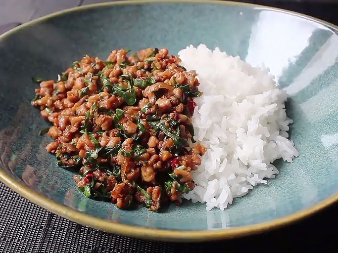

Thai Basil Chicken
Back to Homepage

Thai Basil Chicken is inspired by a dish from an old taco shop in Stillwater OK.
The dish is easily sized up or down depending on needs.
Ingredients
- 3lbs Ground Chicken
- 3 Tbps Olive Oil
- 2 Tbps Minced Garlic
- Crushed REd Pepper
- Fish Oil
- Oyster Sauce (GF Oyster Sauce to make dish GF)
- Soy Sauce (GF Soy Sauce to make dish GF)
- Brown Sugar
- White Sugar
- White Rice